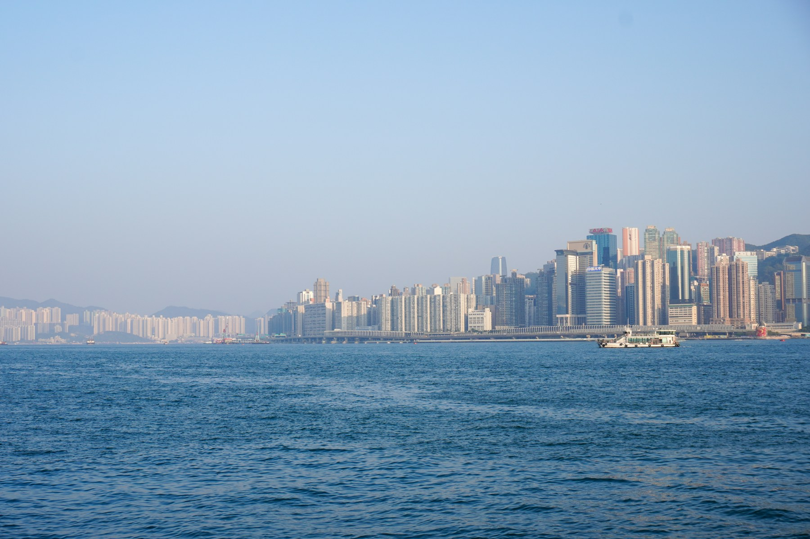

Life / Field note 001
On taking
the long way.
A small case for wandering, paying attention, and arriving a little later.

Victoria Harbour, Hong Kong · Photo by I P / Unsplash
I used to think of a walk as the space between two places. A way of getting somewhere, preferably without taking too long. There was always a quicker route, and usually a reason to take it.
Then there are the days when the route becomes the point. A turn you have never taken. A familiar street at an unfamiliar hour. The small pleasure of finding yourself somewhere you did not plan to be.
A different kind of attention
Moving a little more slowly changes what is available to notice. The city stops being a diagram of destinations and becomes a collection of details: a half-open window, a conversation, light moving across the water.
Some things only become visible when you stop trying to get past them.
I think the same is true of ideas. When everything has to become useful immediately, there is very little room for an uncertain thought to grow into something interesting.
Making room for detours
A notebook gives those thoughts somewhere to live. A place to write something down without having to explain why it deserves to be there.
It might become an essay later. It might become a project. It might remain a paragraph that reminds you of an afternoon. All three seem like good outcomes.
Something worth keeping
That is the kind of space I want this to be. A few longer thoughts, a few small discoveries, and enough room to change my mind.
For now, I am going to take the long way home.
Illustrative article written for this design study, not a published post by Santiago. All homepage titles open this same specimen.